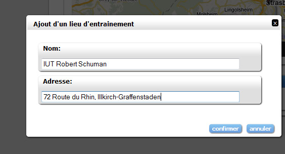

Pour l'ajout d'un évènement, veuillez remplir les champs suivants: Nom: Il s'agit du nom que vous souhaitez donner au lieu à enregistré. Adresse: Il s'agit de l'adresse de ce lieu.  Indication: Il faut séparer les différents éléments de l'adresse de la façon suivante en n'omettant pas les virgules: adresse, ville, pays (exemple: 4 place de la Gare, Strasbourg, FRANCE). Si l'adresse du nouveau lieu ne peut être géolocalisée par les services de Google Maps, un avertissement (boite de dialogue) vous en avertira et il sera alors nécessaire de modifier l'adresse de ce lieu.